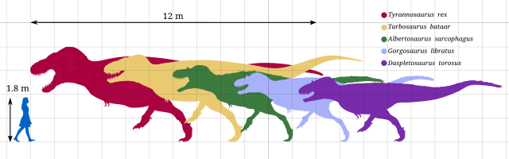
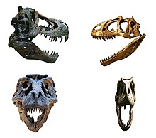
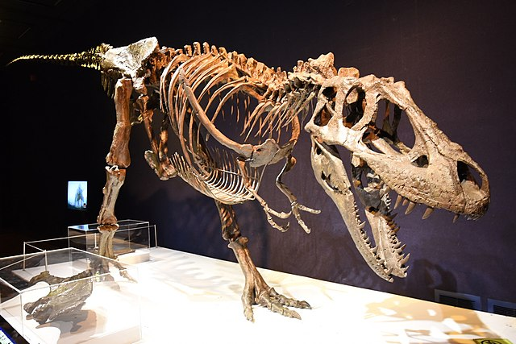
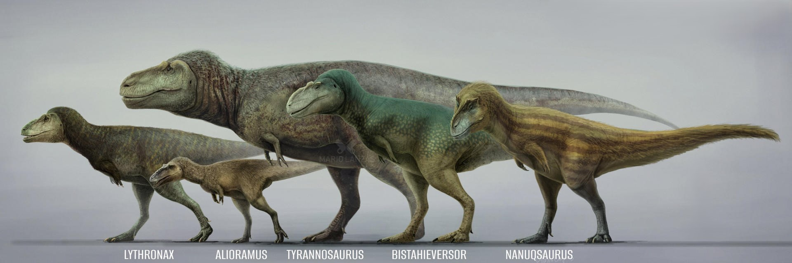
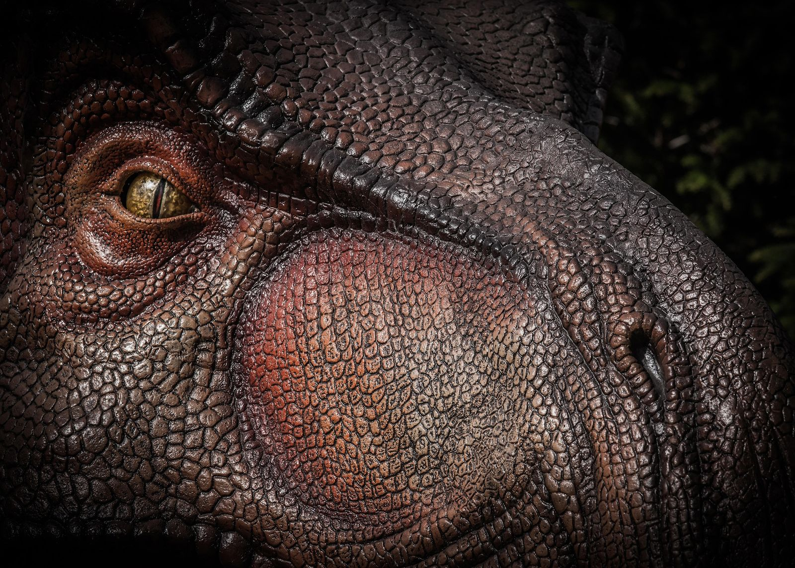
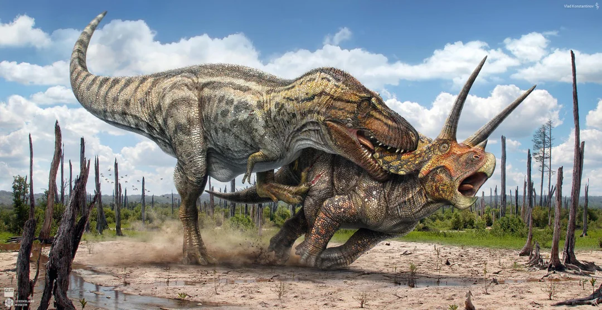
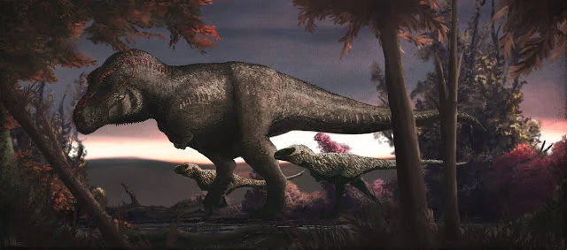
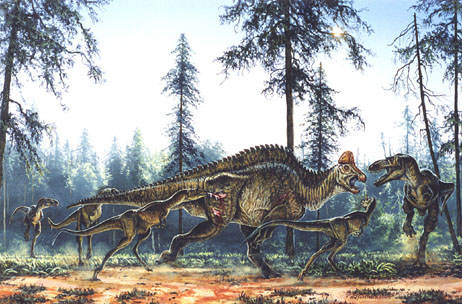
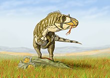
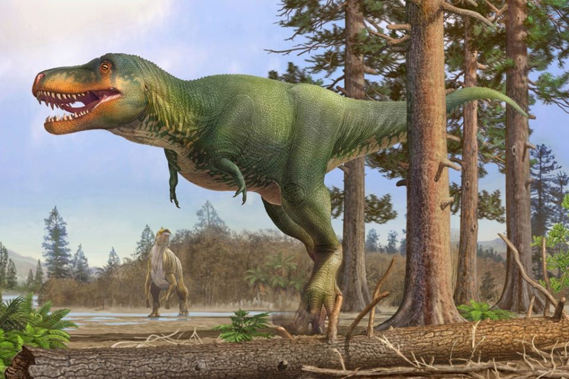

Tyrannosauridae é uma família de dinossauros terópodes que dominaram o topo da cadeia alimentar durante o final do período Cretáceo, há aproximadamente 70 a 66 milhões de anos. Essa família é amplamente conhecida por incluir alguns dos maiores e mais poderosos predadores da história, como o icônico Tyrannosaurus rex.
Tamanho Gigante: Alguns tiranossaurídeos, como o T. rex, podiam atingir mais de 12 metros de comprimento e pesar até 9 toneladas.
Crânio Massivo e Mandíbulas Poderosas: Seus crânios eram enormes em relação ao corpo, e suas mandíbulas eram equipadas com dentes grandes, serrilhados e curvados, ideais para esmagar ossos e cortar carne.
Braços Curtos: Apesar do enorme porte, os tiranossaurídeos tinham braços muito pequenos com apenas dois dedos em cada mão. A função precisa desses membros ainda é debatida, mas acredita-se que eram fortes e poderiam ter algum papel em agarrar presas.
Postura Bípede: Esses dinossauros eram bípedes, caminhando sobre duas pernas robustas que suportavam o peso de seus corpos gigantescos.
Visão e Olfato Aguçados: Eles possuíam sentidos altamente desenvolvidos, como visão binocular e um olfato poderoso, tornando-os predadores eficientes.
Os tiranossaurídeos eram carnívoros especializados, e muitos paleontólogos acreditam que eles eram tanto caçadores ativos quanto necrófagos. Suas mandíbulas poderosas e dentes serrilhados sugerem que poderiam esmagar ossos, o que significa que eram capazes de consumir presas inteiras, incluindo os ossos.
Embora os T. rex adultos fossem gigantes lentos, acredita-se que os juvenis eram mais ágeis e poderiam usar táticas de velocidade para caçar. Há também evidências de comportamento gregário, sugerindo que alguns tiranossaurídeos poderiam ter caçado em grupos ou vivido em comunidades.
Os fósseis de tiranossaurídeos foram encontrados principalmente na América do Norte e na Ásia. O Tyrannosaurus rex é o mais famoso da América do Norte, enquanto gêneros como Tarbosaurus habitavam o que hoje é a Mongólia. Os tiranossaurídeos prosperaram em diversas regiões, adaptando-se a diferentes ambientes.
O membro mais famoso da família, T. rex, viveu há cerca de 66 milhões de anos. Era um dos maiores tiranossaurídeos e é conhecido por suas proporções massivas e habilidades de caça formidáveis. Há debates sobre se o T. rex caçava sozinho ou em grupos. O T. rex podia atingir até 12 metros de comprimento e pesar cerca de 8 a 9 toneladas. Sua altura, quando ereto, chegava a mais de 4 metros nos quadris. Algumas evidências sugerem que ele poderia ter sido um caçador solitário, enquanto outras indicam possível comportamento social. O T. rex é famoso por seus braços curtos, que, embora fossem pequenos em comparação com o resto do corpo, eram bastante musculosos e possuíam dois dedos com garras afiadas.
Albertosaurus era um tiranossaurídeo um pouco menor, com cerca de 9 metros de comprimento, e viveu na América do Norte cerca de 10 milhões de anos antes do T. rex. O Albertosaurus era menor que o T. rex, atingindo cerca de 9 metros de comprimento e pesando entre 1,5 e 2 toneladas. Isso o tornava mais ágil e rápido. O Albertosaurus era um predador que se destacava pela sua agilidade, e provavelmente caçava dinossauros herbívoros menores, como hadrossauros e ceratopsídeos. Ele era mais ágil do que o T. rex, o que lhe permitia perseguir presas em alta velocidade. O nome Albertosaurus significa "lagarto de Alberta", em referência à província canadense onde foi descoberto pela primeira vez.
Relativamente semelhante ao T. rex em aparência e tamanho, Daspletosaurus é conhecido por ter sido um predador feroz que habitou regiões da América do Norte antes do surgimento de seu parente mais famoso. O Daspletosaurus era um predador grande, com comprimento estimado entre 8 a 9 metros e um peso de cerca de 2,5 a 3,5 toneladas. Era ligeiramente menor que o T. rex, mas ainda assim era um dos maiores predadores de sua época. O Daspletosaurus provavelmente dividia seu habitat com outros grandes predadores. Alguns paleontólogos sugerem que ele poderia ter competido com outros tiranossaurídeos, como o Gorgosaurus, pelo domínio sobre os recursos e as presas.
O Tarbosaurus tinha um porte similar ao do T. rex, podendo atingir até 10 a 12 metros de comprimento e pesar entre 4 a 5 toneladas, embora seja considerado ligeiramente mais esbelto. Essas dimensões o tornavam um dos maiores carnívoros de seu habitat. O Tarbosaurus era o maior predador de seu ecossistema e provavelmente se alimentava de grandes dinossauros herbívoros, como os sauropodos e hadrossauros, que compartilhavam o mesmo ambiente. Sua poderosa mordida e dentes serrilhados eram ideais para rasgar a carne de grandes presas. O Tarbosaurus foi descrito pela primeira vez em 1955, após a descoberta de fósseis no Deserto de Gobi por paleontólogos soviéticos e mongóis. Desde então, várias outras descobertas foram feitas, consolidando o Tarbosaurus como um dos tiranossaurídeos mais conhecidos da Ásia.
Como muitos outros dinossauros, os tiranossaurídeos foram extintos no evento de extinção em massa que ocorreu há cerca de 66 milhões de anos. Esse evento, causado possivelmente por um impacto de asteroide combinado com atividade vulcânica e mudanças climáticas, marcou o fim da era dos dinossauros e abriu caminho para o domínio dos mamíferos na Terra.
Os fósseis de tiranossaurídeos são alguns dos mais bem preservados e estudados, especialmente os de Tyrannosaurus rex. O primeiro esqueleto parcial de T. rex foi descoberto em 1902 por Barnum Brown. Desde então, descobertas adicionais revelaram muitos detalhes sobre a vida desses predadores, incluindo pistas sobre sua musculatura, hábitos alimentares e comportamento.
A mordida do T. rex era uma das mais fortes entre todos os animais terrestres conhecidos, capaz de exercer uma pressão de mais de 35.000 newtons.
Os tiranossaurídeos tinham ossos ocos, o que, apesar de seu tamanho, tornava seu esqueleto relativamente leve para facilitar a locomoção.
A pele de alguns tiranossaurídeos foi preservada em fósseis, sugerindo que eles tinham escamas e talvez até penas em certas partes do corpo.